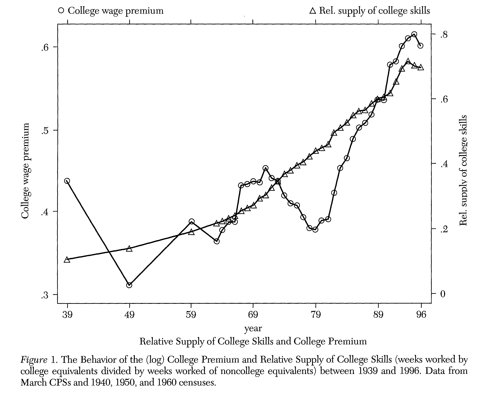
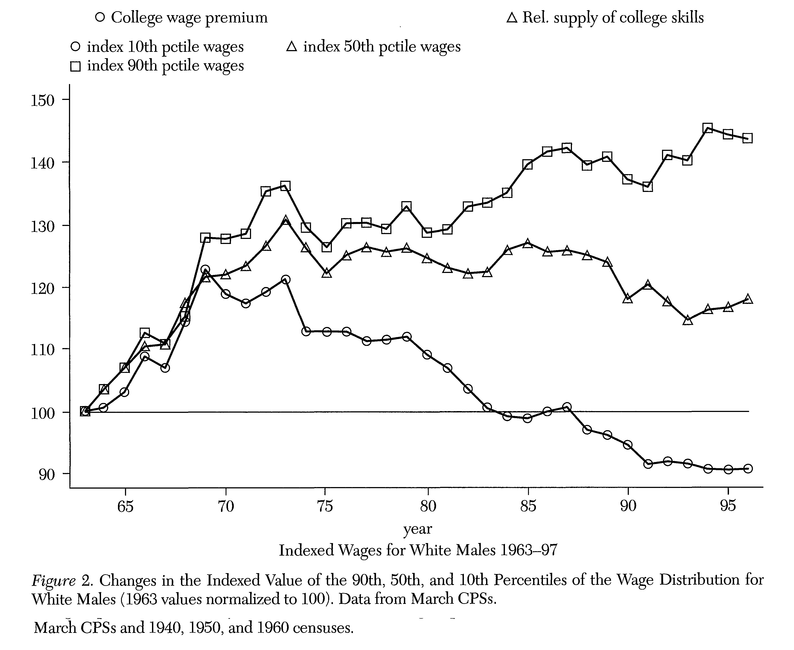
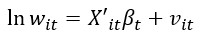
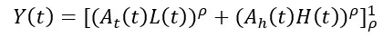
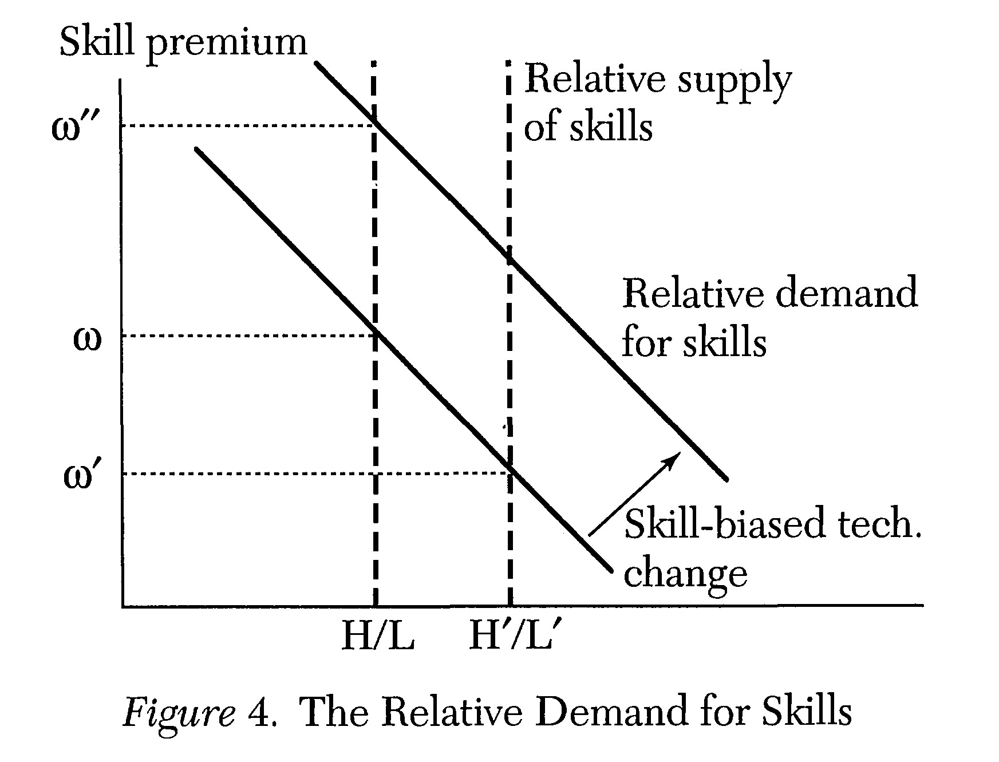

Technical Change, Inequaility and the Labor Market
This article provides a discussion regarding technological change on wage inequality. During the past 60 years, inequality has increased due to skill biased technology change and an acceleration in skill bias favoring skilled over unskilled workers leading to an increase in average skill required. This average skill is measured by the amount of education received and inequality by assessing the skill premium. Furthermore, the aim of the article is to discuss the implications of technical change for the labor market and how does new technology affect the distribution of wages and income
In order to answer the above statements, Acemoglu analyses’ the post-war USA economy and demonstrates:
- Over the past 60 years, supply of more educated workers increased while returns to education were also rising.
- In 1970s there was a sharp increase in supply of educated workers, lowering the returns to education.
- In 1980s returns to education slowly started to rise due to increases within group inequality.
- Due to this, over the past 30 years the wage inequality rose.
After broad research, Acemoglu conveys up 2 explanatory hypothesis about why inequality rose within the past 30 years and not before, which are:
- Steady demand Hypothesis stating that demand for skills increases at a constant rate and changes in technology must be due to an increase in supply of skills.
- Acceleration Hypothesis stating that there has been an acceleration in skill bias over the past several decades.
In order to prove these hypothesis, Acemoglu suggests that technology could be viewed as either an exogenous or endogenous actor and after extensive analysis he concluded that technology is no more than an endogenous actor as an increase in skill-biased technologies led to an increase in supply of skills which leads to an acceleration in demand for skills
Empirical Trends
This section illustrates a number of inequality trends from the past in order to support the discussion and this is introduced in Figure 1 and 2 which emphasizes on:
- There has been a remarkable increase in supply of skills over the past 60 years.
- There has been no tendency for returns to college to fall in the face of this large increase in supply.
- Due to an acceleration in supply of skills, returns to college fell sharply during 1970s and then rose by 1980s.


Figures 1 and 2 show us two important noticeable patterns:
- Overall wage inequality sharply rose in early 1970s
- Median wages stagnated from 1975 onwards
After analyzing these figures, a figure 3 was used to show inequality among equivalent workers and shows us the differentials of the wages at different percentiles which can be calculated by the wage regression:

An overall contrast among these figures is that whilst returns to schooling fell during the 1970s, overall and residual inequality increased.
Introduction to the Theory of Skill Premia
Skill premia is the extra benefit gained if one goes to education relative to not going. Acemoglu introduces a simple framework linking wages to supply of skills and demand generated by the technology possibilities frontier and uses 2 imperfect substitutes, skilled and unskilled workers. This helps yield a production function taking a CES form:

where L and H are skill levels of the worker and σ=1/1-ρ being the elasticity of substitution between the input variables. Using this, Acemoglu mentions 3 noteworthy cases in which the elasticity of substitution(σ) yields inquiring results:
- • σ =0, Skilled and unskilled workers are complements and used in fixed proportions
- • σ =∞, Workers are perfect substitutes and are viewed as identical in a closed economy
- • σ =1, Workers become imperfect substitutes and high- and low-end workers are employed in both sectors
The value of σ is important in this study as it mentions that technologies could alter the relative supply of skills(H/L) and any change would have an effect on skill premia. Acemoglu uses Figure 4 to facilitate his discussion and these are the following changes:

- Downward movement along the relative demand curve and lowers skill premium to w’
- Depending on σ which shows the behavior of skill premia when supply changes and a value of 2 was used in this experiment and so any improvements in the skill-complementary technology will increase skill premium and this can be seen by the shift of the relative demand curve moving skill premia to w’’
The implications of fig.4 due to an increase in relative supply of skills(H/L) are:
- A decrease in relative wages of skilled workers
- An increase in wages of unskilled workers
- A decrease in wages of skilled workers
- A rise in average wage
Consequently, using Section 1+2+3 we draw a general conclusion that for the last 60 years has been characterized by Skill biased technology change as skill-complementary technology is rising along with increase in supply of skilled workers.
Steady-Demand and Acceleration Hpythesis
This section analyzes the initial hypotheses and comes to varying conclusions. To begin with:
- Steady-demand hypothesis- Technological development occurs at a steady rate while supply of relatively skilled workers increases over time leading to a decrease in skill premium and this can be seen by supporting evidence provided in Figure 1 during the 1970s, however from the 1980s this hypotheses is criticized and can no longer hold as time moves on.
- Acceleration Hypothesis- There has been an acceleration in skill bias starting in the 1970s and this hypothesis is supported and provides evidence as follows:
- Increase in mechanization leads to an increase in computer wage premium
- Other papers show skills upgrading resulted in firms hiring more skilled employees
- Complementarity argument- Technology is complementary to high skilled workers
After several analyses, the general conclusions made were:
- Technical change was skill replacing until 19th century then 20th century was characterized by skill biased change due to rapid increase in supply of skilled labor
- Evidence from data suggests an accelerating demand for skills beginning in the 70s.
Photo from: Unsplash
Original Article: Acemoglu, D. (2002): “Technical Change, Inequality and the Labor Market”, Journal of Economic Literature, 40(1), pp. 7-72.